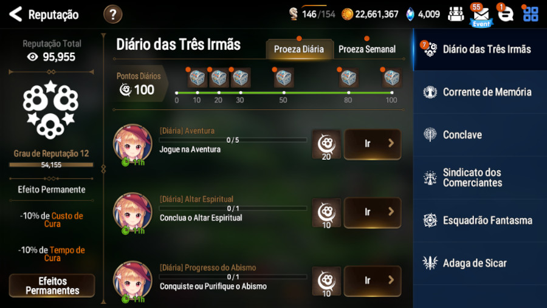
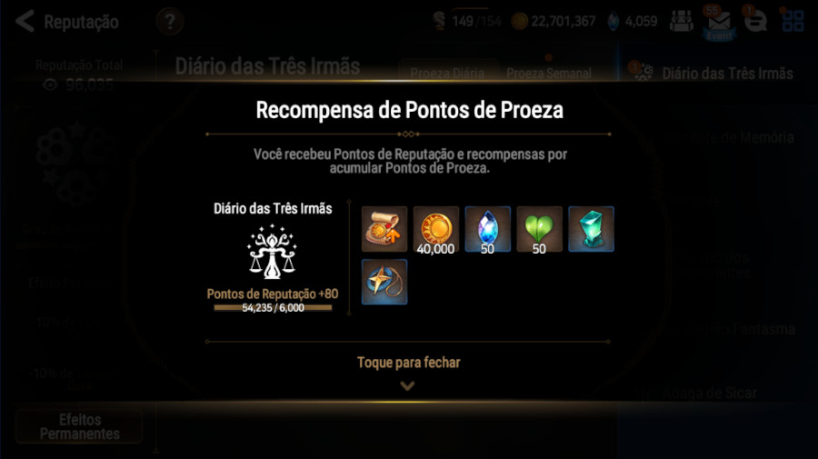
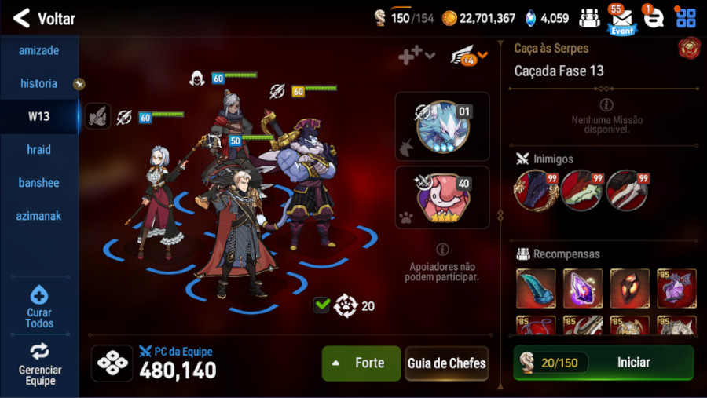
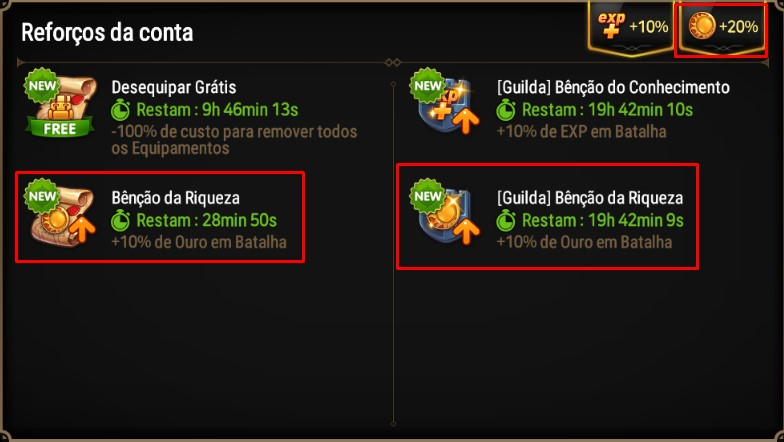

Dicas do que fazer diáriamente
Missões de Proeza Diárias
As missões diárias são muito importantes, pois te fornecem recursos, que podem não parecer muito mas que fazem bastante diferença com o passar do tempo.
As recompensas são: 40.000 de Ouro, 50 Pontos de Amizade, um buff de 10% a mais de ouro recebido por batalha em um período de 1 hora, 1 Marca-Página da Aliança, 1 Pedra de Transferência de Prata e 50 Pedras Celestes no total.
 Completas essas missões é fácil, são coisas simples que você completa enquanto joga, como por exemplo fazer uma caçada, batalhar na arena, promover um herói, etc...
Caçadas
Após recolher o buff de 10% a mais de ouro na Proeza Diária, inicie batalhas de repetição automática de caçada, e estando em uma guilda que compre ativamente o buff de 10% de ouro, você terá 20% de bonus, recebendo assim mais ouro nas caçadas. O objetivo principal disso é conseguir acumular mais ouro, equipamentos e entre outras recompensas, para conseguir melhorar seus personagens.
 Caso não tenha um time para sua Caça ás Serpes(Serpes), conheça nossas Dicas de Wyvern